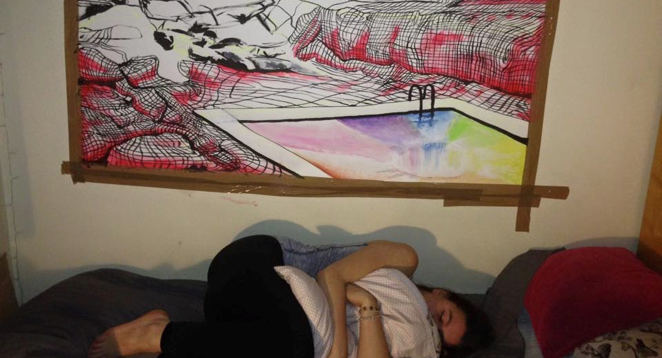

artangel; the loss adjusters; architectural displacement, cultural diffusion.
The peculiarity of not inhabiting the intended location of an audio tour is something akin to sensory deprivation. The arrival of post-internet art has spliced through the belly of the largely virile world of contemporary art. It has counterbalanced male eccentricity with a powerful rejection of extravagance. It has initiated the leveling out of playing fields in terms of accessibility, liberating resources and audiences, such as open sourcing and social media. I am particularly interested in the way contemporary artists have begun using unconventional channels to in order to exhibit work, things that are more discontinuous, more DIY and durational.
This new wave of art has opened up a powerful horizontal platform for those privileged enough to have access to the internet in order to view, create and take part on a global scale. Amongst this wave of new artists, is Katrina Palmer. Her latest piece “the loss adjusters”, which took over a year to make, confronts the loss of geological matter and in turn the loss of culture on the Isle of portland, a small island off the coast of Dorset.
“Today, one cannot and does not have to tell more stories. One can only expand and change existing narratives. Technology allows us to use all sorts of things, to quote, to sample. There's a stronger output of images and stories as well as a stronger need to understand what one is being supplied with. But nobody wants to be just a continually fed terminal. One would like to be able to inhabit one's own culture, to participate in it”
Her sound piece was sponsored by both ArtAngel and BBC radio 4, who offered her up to £500,000 in to create the work. The piece is comprised of three separate parts which contain a rich labyrinth of tales, took Katrina a year to make. Its intended purpose is to co-exist amongst the ever-disappearing landscape of the Isle of Portland as the audience meanders to the narrator's guided tour.
The audio sculpture travels through the land on a dadaesque journey, from a secular office space inhabited by a group of abstruse loss adjusters to a the dead quarryland, now turned nature park. The surrealist qualities of her piece are reminiscent of a powerful lamentation or an ode, like the work ofKeats or Sassoon. Wilfred Owen's piece “The show” sprung to mind when I listened to her densely packed dialogue concerning the air of death that hangs over the isle.
For this reason, the international audience has been handicapped. I find this as a context paradoxically both in tune with current advancements in technology but also rather dated due to the target audience of the artist and the acceptance of corporate sponsorship from the BBC in order to produce the work.
Katrina describes the loss adjustors alongside the female protagonists. They are observers from the exterior, depicted as some sort of pagan-like exorcists of the island, who “may serve to sustain” the geological displacement through the form of abstract replicas of what has been lost. What is left for the quarrymen and their women? The loss adjusters distribute a shoddy compensation in exchange for the displacement of matter and history. However, their true purpose and symbolism is personally for me, still somewhat shrouded in the locality mystery of the locality. This is due to the events that occur in the final section of the artwork.
In the final audio piece, One of the sisters is almost willingly subjected to a sexual encounter with three loss adjusters who have arrived to assess the claims of the local folk. Akin to the obelisks that once stood erect over the dry sand in north africa, his bare flesh and imposing stance screams red-blooded, authoritarian “manliness”. Hard with his sexual potency, he towers over Hazeline, who is wedged between the female adjuster and the portland stone. Her “hole” is left exposed, like the quarried, open wounds scattered across the land. In this peculiar act, which is somewhat similar to a doctor’s examination with a supporting nurse or dental assistant, the female co-worker aids the male adjusters in Hazelines willing sexual exploitation.
This audio sculpture explores this relationship of architectural phallicism within modern and ancient civilisation, a recurrent theme which seemingly co-exists amongst the historically famous freemasons and the stonemasons, both prominently male groups shrouded in secrecy and rumor. The stone, harbouring fossilised secrets stemming right back to the jurassic era have been permanently carved by these societies and firms into patriarchal structures that fortify western traditions.
Because of the works architectural qualities in its relation to the use of geographical information and sculptural literary devices, I was drawn tolooking at the geological displacement of the land on a feminist level. with the female protagonists representing the mourning victims of the island within both the natural and human populus. The phallus has long been a celebrated form within architecture. Katrina counterbalances erect male eccentricity through both her choice of discontinuous medium and sensitive descriptions of the female lodged between the Portland stone and the “loss adjusters”.
Recent modernist architects have also adopted a more ‘yonic’ style in the visual aesthetic and function of buildings, a term coined by the artist Anish Kapoor. Ai Weiwei and Zaha Hadid amongst other upcoming architects are nowquestioning impermeable structures like the grandeuse church of St. Paul's in exchange for more horizontality, which scarr our socio-political environment. Many of the portland stone firms have now gone into administration, unable to keep up with cheaper resources and a lack of prospective customers due to the economic climate.
ierre huyghe's recent work in the Hauser and Wirth was similar in the notion that he draws similarities between humanities microcosmic cultural heritage, juxtaposed with the ancient and the primordial. The jurassic quality of his work; the warm stones amongst waitress monkeys in his most recent show in London reminded me of katrina's storytelling technique. This is why I like the interactive quality of the work as a site specific piece, even though I couldn’t experience that side of the show.
However, I cannot help the feeling of being somewhat disinterested by the drone-like quality of the narration, which is then paradoxically being presented by a white, middle class pillar of western tradition; the BBC.I think the piece fails in its communicative success because of the general consensus that the work is too discontinuous in its presentational format, using soundcloud. In order for one to empathise with the characters within the story, I feel the audience should be more immersed, or the presentation should be less fragmented. However, last minutes in the last section is romantically seducing, reminiscent of a final post-apocalyptic scene in a film. The victim becomes part of the rock, pushed by a wild horse running carelessly into the distance. Tt leaves little hope for humanity, but alludes to much being left for nature, who will always carry on its steady discourse through time and sentient mortality. Like cormac McCarthy’s final chapter of the road who laments on lost hope.
“Once there were brook trout in the streams in the mountains. You could see them standing in the amber current where the white edges of their fins wimpled softly in the flow. They smelled of moss in your hand. Polished and muscular and torsional. On their backs were vermiculate patterns that were maps of the world in its becoming. Maps and mazes. Of a thing which could not be put back. Not be made right again. In the deep glens where they lived all things were older than man and they hummed of mystery.”